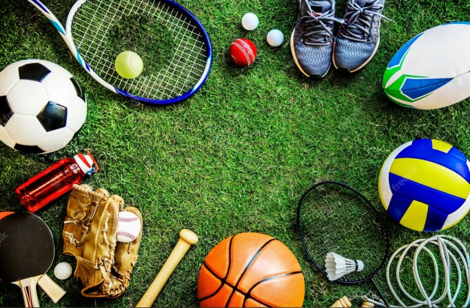

Sobre Nós
Esporte é toda atividade física competitiva com regras e objetivos bem definidos. Um dos objetivos de todas as modalidades esportivas é a superação dos adversários em absoluto respeito às regras. Os esportes podem ser praticados de forma individual ou coletiva, profissionalmente, de maneira recreativa ou para a melhoria da saúde. Seus praticantes são chamados de esportistas, desportistas ou atletas. O esporte engloba diversas dimensões como prática, lazer e como evento. Existem diversas modalidades de esporte. No Brasil, as mais populares são o futebol, o vôlei e o basquetebol. A prática do esporte remete à China, 4000 a.C., onde se registrou os primeiros registros da ginástica. Posteriormente, o Egito e, sobretudo, a Grécia antiga, marcam a história das competições esportivas.
